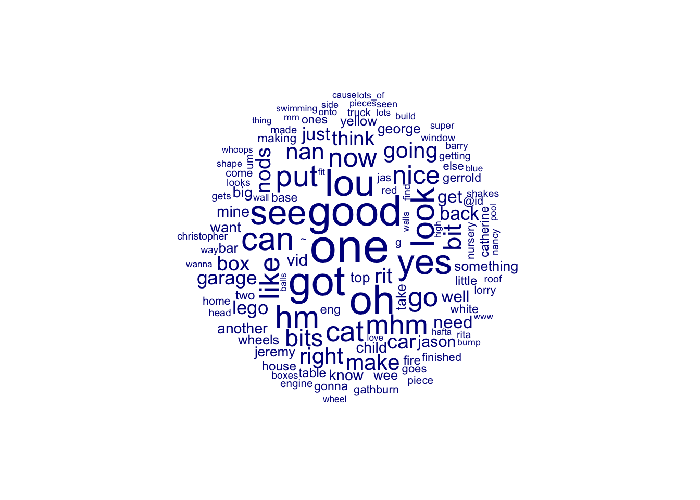
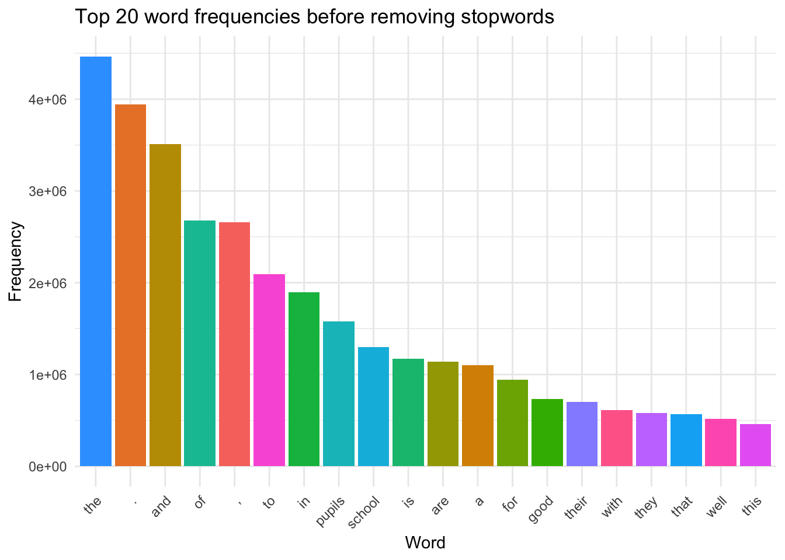
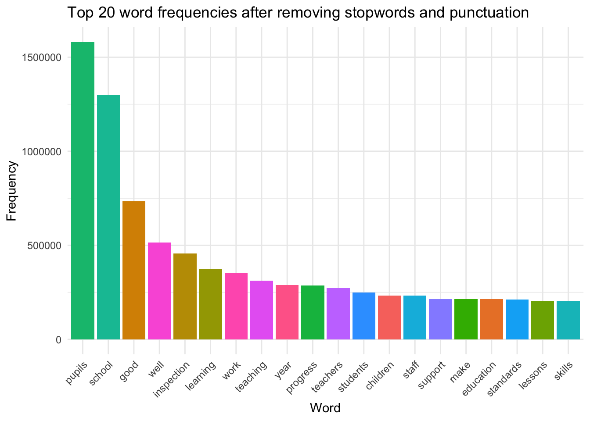
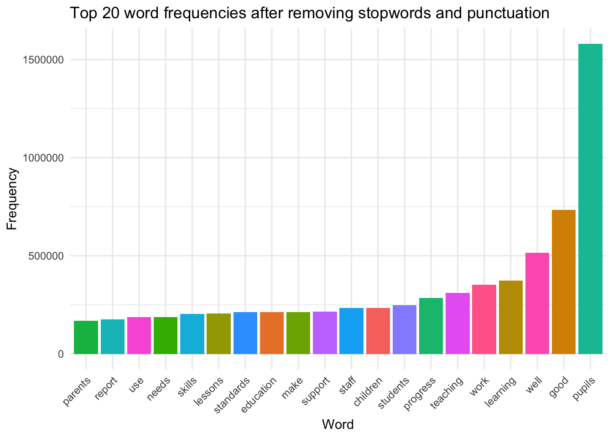
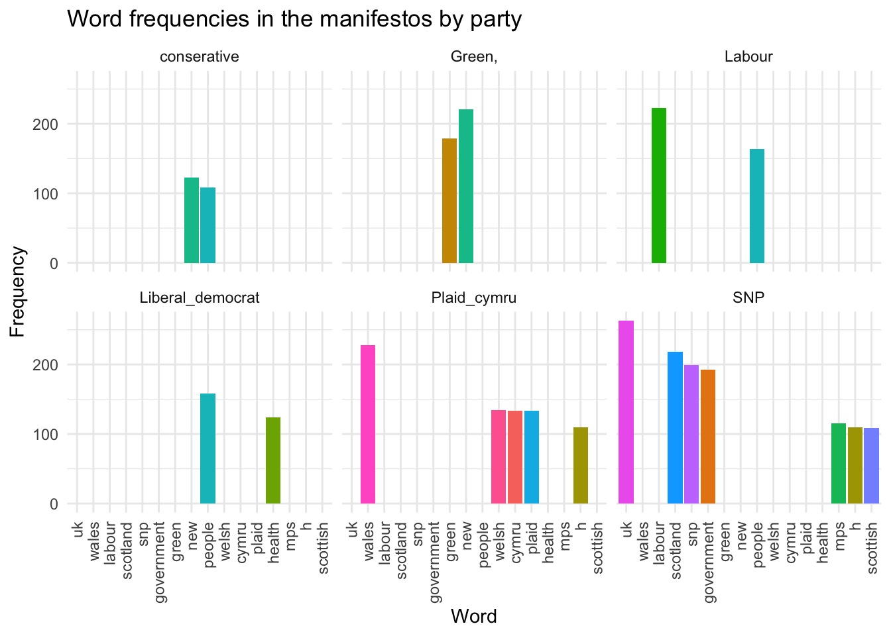
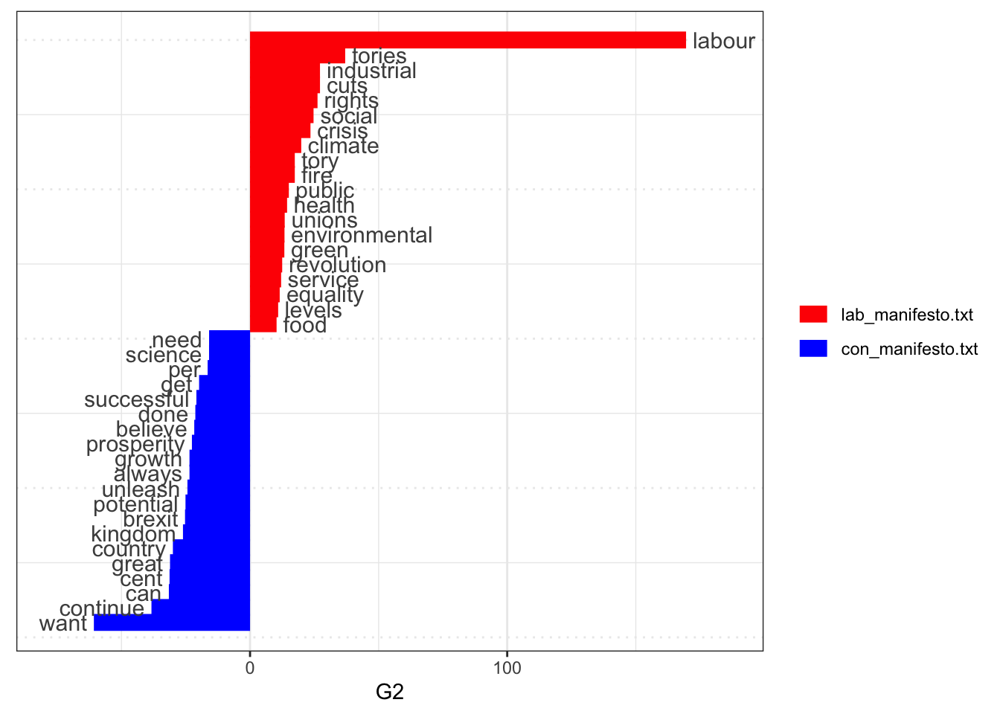

Corpus Analysis
1 Corpus Analysis
Corpus analysis is the empirical study of lingusitic patterns associated with language use in different contexts, often now carried out using computer-based approaches.
1.1 Corpus Analysis in R - quanteda
One of the most widely used packages for corpus analysis in R is the quanteda package. quanteda is a comprehensive package that allows researchers to manage corpora and carry out a wide range of analyses on them. To install quanteda, use the following code, if this is the first time you are using the package you will need to include the install.packages("quanteda") function. We will also load the tidyverse package, which is a collection of packages that are commonly used in data analysis in R.
1.2 Creating a corpus
Typically, the first step in a corpus analysis project is to create a corpus object. A corpus object is a collection of texts that can be analysed together. In quanteda, a corpus object can be created from a variety of sources, including text files, data frames, and character vectors. There are a number of different approaches to reading in textual data.
The data in this teaching page are drawn from talkbank.org, a repository of spoken language data. The data are from the UK component of the CHILDES database, which is a collection of transcripts of child language development.
An acknowledgement of the data set is shown below:
CHILDES: MacWhinney, B. (2000). The CHILDES Project: Tools for analyzing talk. Third Edition. Mahwah, NJ: Lawrence Erlbaum Associates. Note: Please also acknowledge this grant support for CHILDES – NICHD HD082736.
First data may be read from a text file. You can download three example files here: CHILDES project Gathburn 11. CHILDES project Gathburn 12. CHILDES project Gathburn 13.
The files are records of conversations between some children and a teacher. The speakers in the transcript are given the following codes:
| Transcript | Speaker 1 | Speaker 2 | Speaker 3 | Speaker 4 | Speaker 5 | Speaker 6 | Speaker 7 |
|---|---|---|---|---|---|---|---|
| Transcript 11 | STE Teacher | LOU Child | JER Child | CAT Child | CHR Child | ALL Child | UNK Child |
| Transcript 12 | STE Teacher | NAN Child | GEO Child | RIT Child | BAR Child | ||
| Transcript 13 | STE Teacher | GER Child | STE Teacher | KAT Child | VID Child | JAS Child | ALL Child |
You can load files singly or as a group. The code below shows how to load a single file.
it is common to have a number of files that you want to load in together. The package readtext can be used to read in multiple files at once. The code below shows how to load in all the files in a folder. Using the readtext function, you can read in all the files in a folder by giving the path of the folder, rather than a fie.
# You will need to copy the address of the folder on your computer into the quotation marks below
# For example on my laptop the path name is: /Users/k1765032/Library/CloudStorage/OneDrive-King'sCollegeLondon/QERKCL_PISA/data/corpus/Talk Bank/CHILDES/*.txt
library(readtext)
CHILDES_text <- readtext("data/folder/*.txt")To find the path to a file:
On a PC: hold Shift and right-click the file or folder, then select “Copy as Path” from the context menu.
On a Mac: hold down the Option key and right-click the file or folder, then select “Copy as Pathname” from the context menu.
Once the text files have been read in, they need to be converted to a format quanteda can work with. This is done using the corpus function. The code below shows how to convert the CHILDES_text object to a corpus object. You can think of a corpus like a library of the documents you are using in your project.
1.3 Basic analysis in quanteda
Once you have created a corpus object, you can carry out a range of analyses on it. The quanteda package provides a wide range of functions for analysing corpora. A first step is geting some summary descriptive statistics related to your corpus. The code below shows how to get a summary of the corpus object.
Corpus consisting of 3 documents, showing 3 documents:
Text Types Tokens Sentences
CHILDES_Gathburn_11.txt 595 9252 1012
CHILDES_Gathburn_12.txt 605 6157 712
CHILDES_Gathburn_13.txt 688 8629 983In quanteda, types and tokens refer to different ways of counting the unique and total words in a corpus:
Tokens: This refers to the total number of words (or word-like units) in the corpus, including repetitions. Each individual occurrence of a word, regardless of whether it appears elsewhere in the corpus, counts as a token. Types: This refers to the number of unique words in the corpus, disregarding any repetitions. A type is counted only once, no matter how many times it appears in the text.
You may want to add some metadata to your corpus object. This can be done using the docvars function. The code below shows how to add metadata to the CHILDES_corpus object. For example, each file has different number of speakers, and you may want to add this information to the corpus object.
| Transcript | Speaker 1 | Speaker 2 | Speaker 3 | Speaker 4 | Speaker 5 | Speaker 6 | Speaker 7 |
|---|---|---|---|---|---|---|---|
| Transcript 11 | STE Teacher | LOU Child | JER Child | CAT Child | CHR Child | ALL Child | UNK Child |
| Transcript 12 | STE Teacher | NAN Child | GEO Child | RIT Child | BAR Child | ||
| Transcript 13 | STE Teacher | GER Child | STE Teacher | KAT Child | VID Child | JAS Child | ALL Child |
You can use the docvars function to add metadata to the corpus object. The code below shows how to add the number of speakers to the CHILDES_corpus object.
# Adding metadata to the corpus
# Adding to row 1 (i.e. transcript 11) CHILDES_corpus[1]
docvars(CHILDES_corpus, "no_of_speakers") <- c(7, 5, 7)
summary(CHILDES_corpus)Corpus consisting of 3 documents, showing 3 documents:
Text Types Tokens Sentences no_of_speakers
CHILDES_Gathburn_11.txt 595 9252 1012 7
CHILDES_Gathburn_12.txt 605 6157 712 5
CHILDES_Gathburn_13.txt 688 8629 983 7To view your corpus you can as.character function. This will show you the text in the corpus object. Be careful, this can produce a long output! You can print out elements of the corpus object using the as.character(CHILDES_corpus[3]) gives the third text: CHILDES_Gathburn_13.txt.
If you want to filter the corpus, you can use the corpus_subset function. This function allows you to filter the corpus object based on the metadata you have added. The code below shows how to filter the CHILDES_corpus object to only include the texts with 7 speakers.
# Creating a new corpus which contain transcripts with 7 speakers
CHILDES_corpus_7 <- corpus_subset(CHILDES_corpus, no_of_speakers == 7)
summary(CHILDES_corpus_7)Corpus consisting of 2 documents, showing 2 documents:
Text Types Tokens Sentences no_of_speakers
CHILDES_Gathburn_11.txt 595 9252 1012 7
CHILDES_Gathburn_13.txt 688 8629 983 7To start investigating the text in the corpus, you can use the kwic function. The kwic, key words in context, function allows you to search for a word or phrase in the corpus and see the context in which it appears. The code below shows how to use the kwic function to search for the word “teacher” in the CHILDES_corpus object. The first step in the process is to convert the corpus into a tokens object (i.e. to break it into individual words). This is done using the tokens function.
Then the keywords in context search can be performed. The code below shows how to use the kwic function to search for the word “teacher” in the CHILDES_tokens object. The pattern argument is used to specify the word or phrase you want to search for, for example here the word “want”. You can use the `window argument to set how many tokens eithe side of the keyword you want to see. Here we have set the window to 10.
Keyword-in-context with 28 matches.
[CHILDES_Gathburn_11.txt, 4986] put [/ ] this goes [/ ] I
[CHILDES_Gathburn_11.txt, 5351] couple more. STE: mhm. CAT: I
[CHILDES_Gathburn_11.txt, 5969] STE: here you are. JER: < I
[CHILDES_Gathburn_11.txt, 6005] : xxx [ > ]. JER: < I
[CHILDES_Gathburn_11.txt, 6031] ones, haven't you, Jeremy. JER: I
[CHILDES_Gathburn_11.txt, 6047] : mhm. STE: xxx. JER: I
| want | [/ ] this < goes like > [ >
| want | < to go back to the nursery > [*
| want | more > [ > ] white ones. LOU:
| want | more white ones > [ < ]. STE:
| want | more white ones. STE: mhm. STE:
| want | more white ones. STE: you want more white
[ reached 'max' / getOption("max.print") -- omitted 22 rows ]You can carry out a more flexible range of searches using regular expressions (regex). Regex is a sequence of characters that specifies a match pattern in text.
For more information on regular expressions, see the R documentation.
The following symbols can be useful in
| Pattern | Description |
|---|---|
| . | Any single character except a newline |
| ^ | Beginning of String (or Line) |
| $ | End of String (or Line) |
| [] | A set of characters, e.g., [a-z] for lowercase letters |
| [^] | Negation inside square brackets, e.g., [^a-z] for non-lowercase letters |
| () | Grouping (capturing group), used for subpatterns |
| * | 0 or more of the preceding element |
| + | 1 or more of the preceding element |
| ? | 0 or 1 of the preceding element (optional) |
| {n} | Exactly n occurrences of the preceding element |
| {n,} | n or more occurrences of the preceding element |
| {n,m} | Between n and m occurrences of the preceding element |
| b | Word boundary (matches between word and non-word characters) |
| B | Not a word boundary |
| A | Beginning of the string (similar to ^ but anchors the start of the whole string) |
| Z | End of the string (similar to $ but anchors the end of the whole string) |
| \1, \2, … | Backreference to capturing groups, e.g., \1 refers to the first captured group |
| (?=…) | Positive lookahead (assertion, matches a position only if the pattern inside matches) |
| (?!…) | Negative lookahead (assertion, matches a position only if the pattern inside does not match) |
| (?<=…) | Positive lookbehind (matches if preceded by a pattern) |
| (?<!…) | Negative lookbehind (matches if not preceded by a pattern) |
| [:alpha:] | Any letter |
| [:lower:] | Any lowercase letter |
| [:upper:] | Any uppercase letter |
| [:digit:] | Any digit (equivalent to |
| [:alnum:] | Any letter or number |
| [:xdigit:] | Any hexadecimal digit |
| [:punct:] | Any punctuation character |
| [:graph:] | Any letter, number, or punctuation character |
| [:space:] | A space, a tab, a new line, etc. (equivalent to ) |
For example: - the regex ^mini will match any word that starts with “mini”. - the regex able$ will match any word that ends with “able”. - the regex colou?r matches both “color” and “colour”. - the regex [J|j]ane matches both “Jane” and “jane”.
There is a great blog post Baby got backreferences which gives a great introduction to regex (using song lyrics as examples!)
To perform a regex search, you can use the kwic function with the pattern argument set to the regex pattern you want to search for. The code below shows how to use the kwic function to search for words that start with “teach” in the CHILDES_tokens object. You also need to set the valuetype argument to “regex” to indicate that the pattern is a regex pattern. For example, to search for all cases of words that start with “dad” or “Dad” you can use the regex pattern ^[D/d]ad.
# Doing a key word in context search wtih regex
kwic(CHILDES_tokens, pattern = "^[D/d]ad", window = 10, valuetype = "regex")Keyword-in-context with 11 matches.
[CHILDES_Gathburn_12.txt, 957] wheel (. ) no brakes. STE: your |
[CHILDES_Gathburn_12.txt, 976] it? GEO: hm:? STE: your |
[CHILDES_Gathburn_12.txt, 1062] . GEO: one. STE: I heard your |
[CHILDES_Gathburn_12.txt, 2003] a [/ ] making a. STE: your |
[CHILDES_Gathburn_12.txt, 3179] door? NAN: he lives with his mommy and |
[CHILDES_Gathburn_13.txt, 1710] GER: yes, except mine [/ ] my |
Daddy's | car won't steer with no brakes, does it?
Daddy's | car won't steer with no brakes [* ].
Daddy's | xxx jobs with vans. NAN: 0 [%
dad | have a car, Rita? RIT: 0 [
daddy | . STE: yes, but do they live very
daddy | . GER: he hates [! ] dark.
[ reached 'max' / getOption("max.print") -- omitted 5 rows ]Note that you can output the result of kwic search to a dataframe and then use ggplot to represent the data.
# Doing a key word in context search wtih regex and plotting
dad_search <- kwic(CHILDES_tokens, pattern = "^[D/d]ad", window = 10, valuetype = "regex")
ggplot(dad_search, aes(x = keyword, fill = keyword)) +
geom_bar() +
theme_minimal() +
labs(title = "Occurrences of 'dad' in CHILDES corpus")If you want to look up longer phrases, you can give a pattern within phrase(). For example pattern = phrase("I want more")
Keyword-in-context with 12 matches.
[CHILDES_Gathburn_11.txt, 5968:5970] . STE: here you are. JER: < |
[CHILDES_Gathburn_11.txt, 6004:6006] STE: xxx [ > ]. JER: < |
[CHILDES_Gathburn_11.txt, 6030:6032] white ones, haven't you, Jeremy. JER: |
[CHILDES_Gathburn_11.txt, 6046:6048] STE: mhm. STE: xxx. JER: |
[CHILDES_Gathburn_11.txt, 6301:6303] : 0 [ = aids CAT ]. JER: |
[CHILDES_Gathburn_11.txt, 6328:6330] < ]. STE: whoops. JER: < |
I want more | > [ > ] white ones. LOU: there
I want more | white ones > [ < ]. STE: oh
I want more | white ones. STE: mhm. STE: xxx
I want more | white ones. STE: you want more white ones
I want more | wee bits (. ) to put like that.
I want more | bits > [ > ]. STE: xxx [
[ reached 'max' / getOption("max.print") -- omitted 6 rows ]An alternative way to represent where words occur in a text is to use the str_view function from the stringr package, which highlights matches:
library(stringr)
# Read in lyrics of Bohemain Rhapsody from Github
url <- "https://gist.githubusercontent.com/matematikaadit/3a513cc5fe6ebb9565ee1584e2b4f00d/raw/"
file_content <- readLines(url)
str_view(file_content, "poor")[10] │ I'm just a <poor> boy, I need no sympathy,
[45] │ I'm just a <poor> boy, nobody loves me.
[46] │ He's just a <poor> boy from a <poor> family,1.4 Word frequencies
You can also examine the frequency of words in the corpus. The document-feature matrix (DFM) allows you to see the frequency of words in the corpus. The code below shows how to create a DFM object from the CHILDES_tokens object. The dfm function is used to create the DFM object. Then the featfreq function is used to get the word frequencies. Note you can concert the output to a dataframe using as.data.frame() which will allow further processing and use with other packages such as ggplot to make graphs.
# Create a document-feature matrix (DFM)
dfm <- dfm(CHILDES_tokens)
# Get word frequencies
word_frequencies <- featfreq(dfm)
print(word_frequencies) @utf8 @pid : 11312 /
3 3 2772 3 333
c-00019181-1 @begin @languages eng @participants
1 3 3 21 3
ste teacher , lou child
1577 7 605 103 30
jer cat chr all unk
137 74 110 78 6
@options multi @id | gathburn
3 3 18 180 18
@date 16-may-1984 @tape location 1.1
1 1 1 1 1
@transcriber ginny gathercole and rebecca
1 2 1 131 1
burns @location edinburgh scotland @types
1 1 2 1 3
[ reached getOption("max.print") -- omitted 1065 entries ]A useful feature is to be able to add a grouping varibale when doing word counts. For example, we can group by file, using the dfm_group() function.
# Create a document-feature matrix (DFM) grouped by transcript
dfm <- dfm(CHILDES_tokens) %>%
dfm_group(groups = docnames(CHILDES_tokens))
# Get word frequencies
word_frequencies <- featfreq(dfm %>%dfm_group(groups = docnames(CHILDES_tokens)))
# Convert to dataframe
word_frequencies_df <- as.data.frame(word_frequencies)
print(word_frequencies_df) word_frequencies
@utf8 3
@pid 3
: 2772
11312 3
/ 333
c-00019181-1 1
@begin 3
@languages 3
eng 21
@participants 3
ste 1577
teacher 7
, 605
lou 103
child 30
jer 137
cat 74
chr 110
all 78
unk 6
@options 3
multi 3
@id 18
| 180
gathburn 18
@date 1
16-may-1984 1
@tape 1
location 1
1.1 1
@transcriber 1
ginny 2
gathercole 1
and 131
rebecca 1
burns 1
@location 1
edinburgh 2
scotland 1
@types 3
[ reached 'max' / getOption("max.print") -- omitted 1065 rows ]1.5 Cleaning transcripts
In some contexts, before analysis, you may want to clean the text. This can involve removing punctuation, numbers, and other non-word characters. The tokens function has a remove_punct argument that can be set to TRUE to remove punctuation. The code below shows how to create a new tokens object with punctuation removed. You can also remove numbers and symbols using the remove_numbers and remove_symbols arguments.
When examining word frequencies, you may want to remove stopwords. Stopwords are common words that are often removed from text before analysis. For example, stop words include: “i”, “me” , “my”, “myself”, “we”, “our”, “ours”, “ourselves”, “you”, and “your”. If left in, these common, high frequency words can swap out other terms in the data.
quanteda has a built in dictionary of stopwords. You can see those included by running head(stopwords("en"), 20) the 20 limits the ouput to the first 20 words. Here en specifies you are interested in stopwords in English.
[1] "i" "me" "my" "myself" "we"
[6] "our" "ours" "ourselves" "you" "your"
[11] "yours" "yourself" "yourselves" "he" "him"
[16] "his" "himself" "she" "her" "hers" To remove stopwords, you can use the remove argument in the tokens function: tokens_remove(tokens, stopwords("en")). The code below shows how to create a new tokens object with stopwords and punctuation removed. Let us compare outputs with and without the removal of stopwords and punctuation.
# removing stopwords and punctuation
CHILDES_tokens_no_stop <- CHILDES_tokens %>%
tokens(remove_punct = TRUE) %>%
tokens_remove(stopwords("en"))
# Get word frequencies
# Create a document-feature matrix (DFM)
dfm <- dfm(CHILDES_tokens_no_stop)
# Get word frequencies
word_frequencies_no_stop <- featfreq(dfm)
print(word_frequencies_no_stop) @utf8 @pid 11312 c-00019181-1 @begin
3 3 3 1 3
@languages eng @participants ste teacher
3 21 3 1577 7
lou child jer cat chr
103 30 137 74 110
unk @options multi @id |
6 3 3 18 180
gathburn @date 16-may-1984 @tape location
18 1 1 1 1
1.1 @transcriber ginny gathercole rebecca
1 1 2 1 1
burns @location edinburgh scotland @types
1 1 2 1 3
cross group td sit red
3 3 3 9 16
[ reached getOption("max.print") -- omitted 906 entries ]We can compare the results of the two word frequency lists to see the impact of removing stopwords.
# graphs of frequencies before and after removing stopwords
word_frequencies_df <- word_frequencies_df %>%
mutate(feat = rownames(word_frequencies_df)) %>%
arrange(desc(word_frequencies)) %>%
slice_head(n = 20)
ggplot(word_frequencies_df, aes(x = reorder(feat, - word_frequencies), y = word_frequencies, fill = feat)) +
geom_bar(stat = "identity") +
theme_minimal() +
labs(title = "Top 20 word frequencies before removing stopwords") +
labs(x = "Word", y = "Frequency")+
theme(legend.position = "none")
word_frequencies_no_stop_df <- word_frequencies_no_stop_df %>%
mutate(feat = rownames(word_frequencies_no_stop_df)) %>%
arrange(desc(word_frequencies_no_stop)) %>%
slice_head(n = 20)
ggplot(word_frequencies_no_stop_df, aes(x = reorder(feat, - word_frequencies_no_stop), y = word_frequencies_no_stop, fill = feat)) +
geom_bar(stat = "identity") +
theme_minimal() +
labs(title = "Top 20 word frequencies after removing stopwords and punctuation") +
labs(x = "Word", y = "Frequency") +
theme(legend.position = "none")
As you can see, the build in functions for removing punctuation and stop words are not always ideal. You may want to create your own list of words to remove or use a different method to remove them. You can also use the tokens function with the remove argument to remove specific words. The code below shows how to remove the word “teacher” from the CHILDES_tokens object.
# custom removal of words
# Create a custom list of stop words
custom_stopwords <- c("ste", "<", ">", "xxx", "ger", "|", "kat", "jer", "0", "geo", "=", "chr", "+")
CHILDES_tokens_no_stop <- CHILDES_tokens %>%
tokens(remove_punct = TRUE) %>%
tokens_remove(stopwords("en")) %>%
tokens_remove(custom_stopwords)
# Get word frequencies
# Create a document-feature matrix (DFM)
dfm <- dfm(CHILDES_tokens_no_stop)
# Get word frequencies
word_frequencies_no_stop <- featfreq(dfm)
print(word_frequencies_no_stop) @utf8 @pid 11312 c-00019181-1 @begin
3 3 3 1 3
@languages eng @participants teacher lou
3 21 3 7 103
child cat unk @options multi
30 74 6 3 3
@id gathburn @date 16-may-1984 @tape
18 18 1 1 1
location 1.1 @transcriber ginny gathercole
1 1 1 2 1
rebecca burns @location edinburgh scotland
1 1 1 2 1
@types cross group td sit
3 3 3 3 9
red seat two come around
16 5 22 17 5
[ reached getOption("max.print") -- omitted 893 entries ]# Convert to dataframe
word_frequencies_no_stop_df <- as.data.frame(word_frequencies_no_stop)
CHILDES_tokens_no_stop<- CHILDES_tokens_no_stop %>%
tokens_remove(custom_stopwords)
word_frequencies_no_stop_df <- word_frequencies_no_stop_df %>%
mutate(feat = rownames(word_frequencies_no_stop_df)) %>%
arrange(desc(word_frequencies_no_stop)) %>%
slice_head(n = 20)
ggplot(word_frequencies_no_stop_df, aes(x = reorder(feat, - word_frequencies_no_stop), y = word_frequencies_no_stop, fill = feat)) +
geom_bar(stat = "identity") +
theme_minimal() +
labs(title = "Top 20 word frequencies after removing stopwords and punctuation") +
labs(x = "Word", y = "Frequency") +
theme(legend.position = "none")1.5.1 Creating a custom dictionary
We have seen how to search for a single word or phrase in the corpus. You may want to search for multiple words or phrases at once. This can be done using a dictionary. A dictionary is a list of words or phrases that you want to search for in the corpus. The code below shows how to create a dictionary object using the dictionary function. The dictionary function takes a list of words or phrases as input. You can use the dictionary when making a dfm to create word counts
# Setting up a dictionary to search for
dict <- dictionary(list(parent = c("dad", "daddy", "Daddy", "Dad", "mum", "mummy", "Mum", "Mummy"),
colour = c("red", "orange" , "yellow", "green", "blue", "violet")))
# searching for a phrase
# Create a document-feature matrix (DFM) using the dictionary to search for words
dfm <- CHILDES_tokens_no_stop %>%
tokens_lookup(dictionary = dict) %>%
dfm()
# display the dfm
dfmDocument-feature matrix of: 3 documents, 2 features (16.67% sparse) and 1 docvar.
features
docs parent colour
CHILDES_Gathburn_11.txt 0 29
CHILDES_Gathburn_12.txt 2 4
CHILDES_Gathburn_13.txt 4 201.6 Word clouds
A common way to visualise word frequencies is to use a word cloud. A word cloud is a visual representation of text data, where the size of each word indicates its frequency in the text. The quanteda.textplots package can be used to create word clouds in R.
The code below shows how to create a word cloud from the CHILDES_tokens_no_stop object. The text_plotwordcloud function is used to create the word cloud from a ‘dfm’ object. The dim.trim function is used to set the minimum frequency of words to include in the word cloud. If low frequencies words are left in, the word cloud is hard to read. The min_termfreq argument is used to set the minimum frequency of words to include in the word cloud. The textplot_wordcloud function is used to create the word cloud.
library(quanteda.textplots)
# Create a word cloud
# Start from the cleaned dfm object
# Create a custom list of stop words
custom_stopwords <- c("ste", "<", ">", "xxx", "ger", "|", "kat", "jer", "0", "geo", "=", "chr", "+")
CHILDES_tokens_no_stop <- CHILDES_tokens %>%
tokens(remove_punct = TRUE) %>%
tokens_remove(stopwords("en")) %>%
tokens_remove(custom_stopwords)
# Get word frequencies
# Create a document-feature matrix (DFM)
# Trim to remove low frequency words
dfm <- dfm(CHILDES_tokens_no_stop) %>%
dfm_trim(min_termfreq = 10, verbose = FALSE)
# Create a word cloud
textplot_wordcloud(dfm) 
The argument colorcan be use to set a colour gradient by frequency.
# Create a word cloud comparing texts
textplot_wordcloud(dfm, color =c("lightblue", "skyblue", "blue", "darkblue")) 
The textplot_wordcloud() function has an argument to produce comparative plots by text, by setting the comparison argument to true
1.7 Lexical dispersion plots
Lexical dispersion plots are a way to visualise the distribution of words in a text. The textplot_xray function from the quanteda.textplots package can be used to create lexical dispersion plots in R. The code below shows how to create a lexical dispersion plot from the CHILDES_tokens_no_stop object. The textplot_xray function is used to create the lexical dispersion plot. Notice kwic search is first used and the regex arguments introduced above can be applied. The plot shows the occuranve of words over time in the transcripts.
library(quanteda.textplots)
# Create a lexical dispersion plot
kwic(CHILDES_tokens_no_stop, pattern = "good") %>%
textplot_xray()You can create lexical dispersion plots for multiple words at once. The code below shows how to create a lexical dispersion plot for the words “good” and “like” in the CHILDES_tokens_no_stop object.

1.8 Network analysis
Quanteda can plot a ‘dfm’ object to show the relationship between words. The textplot_network function can be used to create a network plot from a ‘dfm’ object. The code below shows how to create a network plot from the CHILDES_tokens_no_stop object. The textplot_network function is used to create the network plot. The min_freq argument is used to set the minimum frequency of words to include in the network plot. It is important to set a sensible threshold for min_freq to prevent the chart becoming cluttered.
Additional arguments are used to format the plot:
• edge_size sets the size of the edges in the network plot. • edge_color is used to set the colour of the edges in the network plot. • vertex_size determines the size of the vertices in the network plot. • vertex_labelsize sets the size of the vertex labels in the network plot. • vertex_labelcolor is used to set the colour of the vertex labels in the network plot. • vertex_color sets the colour of the vertices in the network plot. • vertex_alpha sets the transparency of the vertices in the network plot. • repel is used to set whether the vertices should be repelled from each other in the network plot. • seed is used to set the seed for the random number generator in the network plot.
1.9 Sentiment analysis
Sentiment analysis is a way to determine the emotional tone behind a series of words. The syuzhet package can be used to perform sentiment analysis in R. The package uses a dictionary-based approach to sentiment analysis. Words are assigned a score based on their emotional valence, with positive words having a positive score and negative words having a negative score. The scores are then aggregated to give an overall measure of the emotional tone of the text.
The package uses the NRC lexicon a list of words and their associations with eight emotions (emotions (anger, fear, anticipation, trust, surprise, sadness, joy, and disgust) and two sentiments (negative and positive). The categorisations were achieved through a crowd sourcing process. You can see some of the categorisations below:
lang word sentiment value
1 english abba positive 1
2 english ability positive 1
3 english abovementioned positive 1
4 english absolute positive 1
5 english absolution positive 1
6 english absorbed positive 1
7 english abundance positive 1
8 english abundant positive 1
9 english academic positive 1
10 english academy positive 1 lang word sentiment value
1 english abandon negative 1
2 english abandoned negative 1
3 english abandonment negative 1
4 english abduction negative 1
5 english aberrant negative 1
6 english aberration negative 1
7 english abhor negative 1
8 english abhorrent negative 1
9 english abject negative 1
10 english abnormal negative 1 lang word sentiment value
1 english aberration disgust 1
2 english abhor disgust 1
3 english abhorrent disgust 1
4 english abject disgust 1
5 english abnormal disgust 1
6 english abominable disgust 1
7 english abomination disgust 1
8 english abortion disgust 1
9 english abundance disgust 1
10 english abuse disgust 1 lang word sentiment value
1 english absolution joy 1
2 english abundance joy 1
3 english abundant joy 1
4 english accolade joy 1
5 english accompaniment joy 1
6 english accomplish joy 1
7 english accomplished joy 1
8 english achieve joy 1
9 english achievement joy 1
10 english acrobat joy 1The code below shows how to perform sentiment analysis on the text of Romeo and Juliet download here - in your browser click, File -> Save As… and save the play as a text file. The get_sentiment function is used to perform sentiment analysis. The method argument is used to set the method of sentiment analysis to use. The plot function is used to plot the sentiment analysis results. The type argument is used to set the type of plot to create. The main, xlab, and ylab arguments are used to set the title and labels of the plot.
# Perform sentiment analysis
syuzhet_vector <- get_sentiment(Romeo_and_Juliet_text, method="syuzhet")
# convert the suzhet vector to a dataframe for more choies in plotting
plot_data <- as.data.frame(syuzhet_vector)
ggplot(plot_data, aes(x = 1:length(syuzhet_vector), y = syuzhet_vector)) +
geom_smooth(method = "loess", span =0.5) + # Span here sets the amount of damping on the line
labs(title = "Sentiment analysis of Romeo and Juliet", x = "Line", y = "Sentiment") +
theme_minimal()
1.10 Comparison of sameness of documents
Similarity analysis is a way to compare the similarity of two or more documents. The textstat_simil function from the quanteda.textstats package can be used to perform similarity analysis in R. The code below shows how to perform similarity analysis on two party manifestos. First a document feature matrix object, grouped by party, is created. Then textstat_simil function is used to perform similarity analysis. The as.matrix function is used to convert the similarity analysis results to a matrix. A score of 1.0 indicates texts are identical, and 0 indicates they are completely distinct. The heatmap function is used to plot the similarity analysis results.
As an example we will use manifesto text from a corpus of political party manifestos. The manifestos come from: The Manifesto Corpus version 2024-1, :Lehmann, Pola / Franzmann, Simon / Al-Gaddooa, Denise / Burst, Tobias / Ivanusch, Christoph / Lewandowski, Jirka / Regel, Sven / Riethmüller, Felicia / Zehnter, Lisa (2024): Manifesto Corpus. Version: 2024-1. Berlin: WZB Berlin Social Science Center/Göttingen: Institute for Democracy Research (IfDem).
You can download the 2019 labour and conservative Liberal Democrat Scottish National, Plaid Cymru, Green Party, Democatic Unionist Party manifestos here.
library(quanteda.textstats)
library(quanteda.textplots)
# Read in the text of the manifestos
manifesto_corpus <- corpus(manifesto_text)
# Label the manifestos
docvars(manifesto_corpus, "party") <- c("conserative", "DUP", "Green,", "Labour", "Liberal_democrat", "Plaid_cymru", "SNP")
# Create a dfm grouped by president
# Remove punctuation and stopwords
# group by party
dfmat_manifesto <- tokens(manifesto_corpus, remove_punct = TRUE) %>%
tokens_remove(stopwords("english")) %>%
tokens_group(groups = party) %>%
dfm()
# Perform the similarity analysis
tstat_sim <- textstat_simil(dfmat_manifesto)
mat_sim <- as.matrix(tstat_sim)
mat_sim conserative DUP Green, Labour Liberal_democrat
conserative 1.0000000 0.9834780 0.9871499 0.9898764 0.9899208
DUP 0.9834780 1.0000000 0.9750170 0.9775076 0.9789022
Green, 0.9871499 0.9750170 1.0000000 0.9863148 0.9882063
Labour 0.9898764 0.9775076 0.9863148 1.0000000 0.9921378
Liberal_democrat 0.9899208 0.9789022 0.9882063 0.9921378 1.0000000
Plaid_cymru SNP
conserative 0.9818913 0.9770161
DUP 0.9721829 0.9699785
Green, 0.9783747 0.9726886
Labour 0.9819165 0.9756541
Liberal_democrat 0.9825760 0.9772731
[ reached getOption("max.print") -- omitted 2 rows ]# plot the data as a heatmap - setting the font size on the axes with cexRow and cexCol
heatmap(mat_sim, cexRow = 0.7, cexCol = 0.7)
1.11 Keyness
Keyness analysis is a way to identify words that are significantly more frequent in one text compared to another. The textstat_keyness function from the quanteda.textstats package can be used to perform keyness analysis in R. The code below shows how to perform keyness analysis on two texts. The textstat_keyness function is used to perform keyness analysis. The target argument is used to specify the texts to compare against. The results are plotted using the textplot_keyness function, specifying the number of words to plot with the n argument and the colours to use with the color argument.
library(quanteda.textplots)
# Create a corpus
manifesto_corpus <- corpus(manifesto_text)
# Label the manifestos
docvars(manifesto_corpus, "party") <- c("conservative", "DUP", "green", "labour", "liberal_democrat", "Plaid_cymru", "SNP")
# Subset to green and conservative
green_lab_manifesto <- corpus_subset(manifesto_corpus, party == "green" | party == "labour")
# Remove punctuation and stopwords
# group by party
dfmat_manifesto <- tokens(green_lab_manifesto, remove_punct = TRUE,
remove_numbers = TRUE, remove_symbols = TRUE) %>%
tokens_remove(stopwords("english")) %>%
dfm()
# Perform keyness analysis
keyness_stat <- textstat_keyness(dfmat_manifesto, target = "green_manifesto.txt", measure = "lr")
# Plot the keyness analysis
textplot_keyness(keyness_stat, color = c("green", "red"), n = 20)1.12 Topic models
Topics modelling is an approach that attempts to find clusters of words that occur - these clusters can be thought of as topics in the text. For example, in a manifesto, the words industry, workers, energy, manufacturing may co-occur and be thought to relate to industrial policy. Topic modelling can use a number of different algorithms to define clusters of words, one of the most common is Latent Dirichlet Allocation (LDA). To perform a LDA topic model, you can use the seededlda package. The topic modelling is performed using the function textmodel_lda(<dfmat_object>, k = <number of desired clusters>)
library(seededlda)
# Using the dfm_mat from above - set number of topics to 5
tmod_con <- textmodel_lda(dfmat_manifesto, k = 5)
terms(tmod_con) topic1 topic2 topic3 topic4 topic5
[1,] "labour" "rates" "na" "develop" "green"
[2,] "review" "young" "people" "life" "new"
[3,] "tories" "place" "public" "least" "tax"
[4,] "conservatives" "given" "government" "changes" "deal"
[5,] "standards" "allow" "ensure" "discrimination" "billion"
[6,] "care" "healthy" "new" "share" "local"
[7,] "employers" "uk’s" "uk" "local" "carbon"
[8,] "police" "committed" "support" "animal" "income"
[ reached getOption("max.print") -- omitted 2 rows ]1.13 Seminar activities
The first tasks use the election manifesto corpus. The manifestos come from: The Manifesto Corpus version 2024-1, :Lehmann, Pola / Franzmann, Simon / Al-Gaddooa, Denise / Burst, Tobias / Ivanusch, Christoph / Lewandowski, Jirka / Regel, Sven / Riethmüller, Felicia / Zehnter, Lisa (2024): Manifesto Corpus. Version: 2024-1. Berlin: WZB Berlin Social Science Center/Göttingen: Institute for Democracy Research (IfDem).
You can download the 2019 labour and conservative Liberal Democrat Scottish National, Plaid Cymru, Green Party, Democatic Unionist Party manifestos here.
1.13.1 Task 1 Word clouds
Download the manifesto texts for the parties. Create a corpus object from the texts. Add metadata to the corpus object to indicate the party of each manifesto. Create a document-feature matrix (DFM) from the corpus object. Produce a table and a graph of the counts of words by frequency.
Hint - when you prepare the data frame for plotting you will want to convert the rownames in the dfm object dataframe to a new column - you can do that with: word_frequencies_df <- word_frequencies_df %>% mutate(feat = rownames(word_frequencies_df)). To make the graph look reasonable you will also need to filter the data frame to get only the top words by frequency.
Answer
# Load the manifestos
# manifesto_text <- readtext(glue("<your manifesto text file folder>"))
# Create a corpus object
manifesto_corpus <- corpus(manifesto_text)
# Add metadata to the corpus object
docvars(manifesto_corpus, "party") <- c("conserative", "DUP", "Green,", "Labour", "Liberal_democrat", "Plaid_cymru", "SNP")
summary(manifesto_corpus)Corpus consisting of 7 documents, showing 7 documents:
Text Types Tokens Sentences party
con_manifesto.txt 3493 34445 1 conserative
DUP_manifesto.txt 2543 16435 23 DUP
green_manifesto.txt 4317 39279 55 Green,
lab_manifesto.txt 4585 45071 1 Labour
lib_dem_manifesto.txt 4631 44698 5 Liberal_democrat
plaid_cymru_manifesto.txt 3870 30239 37 Plaid_cymru
SNP_manifesto.txt 3596 35561 16 SNPAnswer
# Create a dfm grouped by party
dfmat_manifesto <- tokens(manifesto_corpus) %>%
tokens_group(groups = party) %>%
dfm()
# Get word frequencies
word_frequencies <- featfreq(dfmat_manifesto)
# Convert to dataframe
word_frequencies_df <- as.data.frame(word_frequencies)
# Prepare the data for plotting by adding a column for features
# Arrange by frequency and select the top 20 words
word_frequencies_df <- word_frequencies_df %>%
mutate(feat = rownames(word_frequencies_df)) %>%
arrange(desc(word_frequencies)) %>%
slice_head(n = 20)
# Plot the word frequencies
ggplot(word_frequencies_df, aes(x = reorder(feat, - word_frequencies), y = word_frequencies, fill = feat)) +
geom_bar(stat = "identity") +
theme_minimal() +
labs(title = "Word frequencies in the manifestos") +
labs(x = "Word", y = "Frequency") +
theme(legend.position = "none")
The manifesto corpus needs to be cleaned before analysis. Remove punctuation and stopwords from the corpus. Create a new DFM object from the cleaned corpus. Produce a new table and a graph of the counts of words by frequency in the cleaned corpus. You may want to add custom terms to clean the corpus.
This time use tokens_group(groups = party) to create graphs of word frequencies by party.
# Load the manifestos
# manifesto_text <- readtext(glue("<your manifesto text file folder>"))
# Create a corpus object
manifesto_corpus <- corpus(manifesto_text)
# Add metadata to the corpus object
docvars(manifesto_corpus, "party") <- c("conserative", "DUP", "Green,", "Labour", "Liberal_democrat", "Plaid_cymru", "SNP")
summary(manifesto_corpus)Corpus consisting of 7 documents, showing 7 documents:
Text Types Tokens Sentences party
con_manifesto.txt 3493 34445 1 conserative
DUP_manifesto.txt 2543 16435 23 DUP
green_manifesto.txt 4317 39279 55 Green,
lab_manifesto.txt 4585 45071 1 Labour
lib_dem_manifesto.txt 4631 44698 5 Liberal_democrat
plaid_cymru_manifesto.txt 3870 30239 37 Plaid_cymru
SNP_manifesto.txt 3596 35561 16 SNP# Create a dfm grouped by party
custom_stopwords <- c("na", "£")
dfmat_manifesto <- tokens(manifesto_corpus,
remove_punct = TRUE, remove_numbers = TRUE, remove_symbols = TRUE) %>%
tokens_remove(stopwords("en")) %>%
tokens_remove(custom_stopwords) %>%
tokens_group(groups = party) %>%
dfm()
# Get word frequencies
word_frequencies_by_party <- as.data.frame(as.matrix(dfmat_manifesto))
# Tidy the columns - delete meta-data
word_frequencies_by_party <- word_frequencies_by_party %>%
select(-text, -text_en, -cmp_code, -eu_code)
# Get a total count of words across party
# Prepare the data for plotting by adding a column for features
# Arrange by frequency and select the top 20 words
word_frequencies_total <- as.data.frame(colSums(word_frequencies_by_party))
# add column `feat` with rownames
word_frequencies_total$feat <- rownames(word_frequencies_total)
word_frequencies_total <- word_frequencies_total %>%
rename(word_frequencies = "colSums(word_frequencies_by_party)") %>%
arrange(desc(word_frequencies)) %>%
slice_head(n = 20)
# Plot the word frequencies
ggplot(word_frequencies_total, aes(x = reorder(feat, - word_frequencies), y = word_frequencies, fill = feat)) +
geom_bar(stat = "identity") +
theme_minimal() +
labs(title = "Word frequencies in all the manifestos") +
labs(x = "Word", y = "Frequency") +
theme(legend.position = "none") +
theme(axis.text.x = element_text(angle = 90, vjust = 0.5, hjust = 1))
# Prepare the data for parties for plotting by pivoting
word_frequencies_by_party$parties <- rownames(word_frequencies_by_party) # turn the row names into a column
party_frequencies <- word_frequencies_by_party %>%
pivot_longer(
cols = -parties,
names_to = "word",
values_to = "count") %>%
arrange(desc(count)) %>%
slice_head(n = 20)
# Facet plot by party
ggplot(party_frequencies, aes(x = reorder(word, - count), y = count, fill = word)) +
geom_bar(stat = "identity") +
theme_minimal() +
labs(title = "Word frequencies in the manifestos by party") +
labs(x = "Word", y = "Frequency") +
theme(legend.position = "none") +
theme(axis.text.x = element_text(angle = 90, vjust = 0.5, hjust = 1)) +
facet_wrap(~parties)
1.13.2 Task 2 wordclouds and network analysis
Create wordclouds for the conservative and labour party manifestos using the textplot_network function. Work with the formatting options to get the best possible output. What patterns can you determine about differences in word use?
Create a network plot of the words in the conservative and labour party manifestos using the textplot_network function. Work with the formatting options to get the best possible output. What patterns can you determine about differences in word use?
Answer word clouds
library(quanteda.textplots)
# Load the manifestos
# manifesto_text <- readtext(glue("<your manifesto text file folder>"))
# Create a corpus object
manifesto_corpus <- corpus(manifesto_text)
# Add metadata to the corpus object
docvars(manifesto_corpus, "party") <- c("conservative", "dup", "green,", "labour", "liberal_democrat", "Plaid_cymru", "SNP")
summary(manifesto_corpus)Corpus consisting of 7 documents, showing 7 documents:
Text Types Tokens Sentences party
con_manifesto.txt 3493 34445 1 conservative
DUP_manifesto.txt 2543 16435 23 dup
green_manifesto.txt 4317 39279 55 green,
lab_manifesto.txt 4585 45071 1 labour
lib_dem_manifesto.txt 4631 44698 5 liberal_democrat
plaid_cymru_manifesto.txt 3870 30239 37 Plaid_cymru
SNP_manifesto.txt 3596 35561 16 SNPAnswer word clouds
# Subset for the conservative and labour party
con_manifesto <- corpus_subset(manifesto_corpus, party == "conservative")
lab_manifesto <- corpus_subset(manifesto_corpus, party == "labour")
# Create a dfm grouped for the conservative and labour party, cleaning the corpus
custom_stopwords <- c("na", "£")
dfmat_con_manifesto <- tokens(con_manifesto, remove_punct = TRUE, remove_numbers = TRUE) %>%
tokens_remove(stopwords("en")) %>%
tokens_remove(custom_stopwords) %>%
dfm()
dfmat_lab_manifesto <- tokens(lab_manifesto, remove_punct = TRUE, remove_numbers = TRUE) %>%
tokens_remove(stopwords("en")) %>%
tokens_remove(custom_stopwords) %>%
dfm()
# Create word clouds
textplot_wordcloud(dfmat_con_manifesto,
min_count = 5,
max_words = 100,
color = "blue",
max_size = 5,
min_size = 1)
Answer word clouds

# Create network plots
# create dfms
custom_stopwords <- c("na", "£", "h")
dfmat_con_manifesto <- tokens(con_manifesto, remove_punct = TRUE, remove_numbers = TRUE) %>%
tokens_remove(stopwords("en")) %>%
tokens_remove(custom_stopwords) %>%
dfm()
dfmat_lab_manifesto <- tokens(lab_manifesto, remove_punct = TRUE, remove_numbers = TRUE) %>%
tokens_remove(stopwords("en")) %>%
tokens_remove(custom_stopwords) %>%
dfm()
# Include only top 20 terms
top_terms <- names(topfeatures(dfmat_con_manifesto, 20))
dfmat_con_manifesto_filtered <- dfm_select(dfmat_con_manifesto, pattern = top_terms)
# Include only top 20 terms
top_terms <- names(topfeatures(dfmat_lab_manifesto, 20))
dfmat_lab_manifesto_filtered <- dfm_select(dfmat_lab_manifesto, pattern = top_terms)
# Produce a network plot
textplot_network(dfmat_con_manifesto_filtered, min_freq = 50, edge_size = 0.5, edge_color = "lightblue", vertex_size = 0.5, vertex_labelsize = 5, vertex_labelcolor = "darkblue", vertex_color = "lightblue", vertex_alpha = 0.5, repel = TRUE, seed = 1234)textplot_network(dfmat_lab_manifesto_filtered, min_freq = 50, edge_size = 0.5, edge_color = "red", vertex_size = 0.5, vertex_labelsize = 5, vertex_labelcolor = "darkred", vertex_color = "red", vertex_alpha = 0.5, repel = TRUE, seed = 1234)1.13.3 Task 3 keyness analysis
Create a keyness plot comparing the language in the labour and conservative manifestos. What words are most distinctive in each manifesto?
Answer
library(quanteda.textplots)
# Create a corpus
manifesto_corpus <- corpus(manifesto_text)
# Label the manifestos
docvars(manifesto_corpus, "party") <- c("conservative", "DUP", "green", "labour", "liberal_democrat", "Plaid_cymru", "SNP")
# Subset to labour and conservative
con_lab_manifesto <- corpus_subset(manifesto_corpus, party == "conservative" | party == "labour")
# Remove punctuation and stopwords
# group by party
dfmat_manifesto <- tokens(con_lab_manifesto, remove_punct = TRUE,
remove_numbers = TRUE, remove_symbols = TRUE) %>%
tokens_remove(stopwords("english")) %>%
dfm()
# Perform keyness analysis
keyness_stat <- textstat_keyness(dfmat_manifesto, target = "lab_manifesto.txt", measure = "lr")
# Plot the keyness analysis
textplot_keyness(keyness_stat, color = c("blue", "red"), n = 20)1.13.4 Task 4 lexical disperssion plot
Create a lexical dispersion plot comparing where the word “Brexit” and “economy” appears in the labour, conservative and liberal democrat policy
Answer
library(quanteda.textplots)
# Create a corpus
manifesto_corpus <- corpus(manifesto_text)
# Label the manifestos
docvars(manifesto_corpus, "party") <- c("conservative", "DUP", "green", "labour", "liberal_democrat", "Plaid_cymru", "SNP")
# Subset to labour and conservative
con_lab_lib_manifesto <- corpus_subset(manifesto_corpus, party == "conservative" | party == "labour" |
party == "liberal_democrat")
con_lab_lib_manifesto_tokens <- tokens(con_lab_lib_manifesto, remove_punct = TRUE,
remove_numbers = TRUE, remove_symbols = TRUE) %>%
tokens_remove(stopwords("en"))
textplot_xray(
kwic(con_lab_lib_manifesto_tokens, pattern = "brexit"),
kwic(con_lab_lib_manifesto_tokens, pattern = "economy"))
2 Analysing ofsted reports
We have created a large corpus of the text of Ofsted reports, by scrapping all Ofsted reports from the Ofsted website. You can download a subset of the corpus, for London schools, as a parquet file from here.
To load the corpus into R, you can use the read_parquet function from the arrow package.
The corpus contains the text of all Lonson Ofsted reports from 2010 to 2023. The variables in the data frame are:
| Variable Name | Explanation |
|---|---|
| file | pdf report file name |
| text | Text of the pdf report |
| year | Year of the report |
| month | Month of the report |
| day | Day of the report |
| fle_name | Filename |
| urn_orig | Original URN (Unique Reference Number) - school reference number |
| date | Full date (combination of year, month, day) |
| name | Name of the inspection site (e.g., school) |
| urn | Unique Reference Number |
| address | Address of the inspection site |
| reports | Type of report. |
| urls | url of report |
| closed_link | |
| closed_name | |
| urn_2 | |
| type | type of inspection - e.g. full or short |
| grade | ofsted grade |
The corpus provides a rich source of text data for analysis. Using the approaches introduced above, you can attempt the tasks below.
2.1 Task 1 - Tracking policies over time
Using the London ofsted corpus, produce graphs of how the frequency of reference to the following policies /pedagogies have changed over time:
• brain gym • learning styles • mastery
Choose your group of keywords to plot. To create the plot, we have broken the task down into a n number of steps. First, use the tokens() function to tokenise the london_ofsted_corpus.
Answer
# create a corpus object from the ofsted reports
london_ofsted_corpus <- corpus(london_ofsted_reports)
# tokenise the corupus removing stop words, numbers, symbols and
# punctuation
# this will be slow as the corpus is large!
tokens_clean <- tokens(london_ofsted_corpus,
remove_punct = TRUE,
remove_numbers = TRUE,
remove_symbols = TRUE) %>%
tokens_tolower() %>% # convert to lower case
tokens_remove(stopwords("en"))Next, to be able to search for two word phrases use the phrase and tokens_compound functions to search the cleaned tokens data for the policy names of interest
Answer
# Convert keywords to tokens for compound matching - this means the search is
# for the whole phrase, not the individual words
# Create a pattern where multi-word terms use the phrase operator
keywords_phrases <- c(phrase("brain gym"), phrase("learning styles"), "mastery")
# Compound multi-word keywords into single tokens and search
tokens_compounded <- tokens_compound(tokens_clean, pattern = keywords_phrases)Create a dfm with the frequencies of the keywords and convert to a data frame ready for plotting. Hints: • You will want to use dfm_group(groups = docvars(london_ofsted_corpus, "year")) to group the dfm by year to enable you to plot change over time • When searching for the keywords, note the compounded tokens will now have an underscore in them - for example, “learning_styles” • When you convert the dfm to a data.frame the years will become row names. To convert rownames to a column you can use freqs_df$year <- rownames(freqs_df) • On converting to a dataframe, you will have a column for each keyterm. For plotting, ggplot prefers long format in which there is a single column/vector for counts with two columns identifying the year and keyword. To change the data frame to this format you can use the pivot_longer function. See below
When plotting data, long form data frames are preferred over wide forms. The difference is illustrated below. In a wide form data frame, each invidiual or school is a row and may have multiple columns of data:
Answer
student math english
1 A 81 54
2 B 56 32
3 C 43 78
4 D 56 91
5 E 78 33
6 F 92 67In long form, there is a single column for numeric data and each individual or school has multiple entries:
Answer
# A tibble: 12 × 3
student subject scores
<chr> <chr> <dbl>
1 A math 81
2 A english 54
3 B math 56
4 B english 32
5 C math 43
6 C english 78
7 D math 56
8 D english 91
9 E math 78
10 E english 33
11 F math 92
12 F english 67To convert wide form to long form, you use the pivot_longer function. The function takes the arguments: a) cols = c("col1","col2") - the names of the columns to combine into a longer column; b) names_to = “” - the name of the new column labelling the values; and values_to = “” - the name of the new column containing the values. For example, in the case of converting the example dataframe above we use: pivot_longer(wide_form, cols = c(math, english), names_to = "subject", values_to = "scores"). We specify the two columns we want to stack (c(math, english)), the names of the column with the subject labels and the scores.
Answer
# Create dfm grouped by year
ofsted_dfm <- dfm(tokens_compounded) %>%
dfm_group(groups = docvars(london_ofsted_corpus, "year"))
#After compounding, we need to select the compounded tokens
# which now have underscores
keywords_compounded <- c("brain_gym", "learning_styles", "mastery")
# Select keyword phrases in dfm
dfm_keywords <- dfm_select(ofsted_dfm, pattern = keywords_compounded)
# Convert to data frame
freqs_df <- convert(dfm_keywords, to = "data.frame")
# convert row names with years to columns
freqs_df$year <- rownames(freqs_df)
# Pivot for plotting
freqs_long <- freqs_df %>%
select(-year) %>%
pivot_longer(cols = -doc_id, names_to = "keyword", values_to = "frequency")Finally, plot your data as a line chart - you may want to facet the chart to give separate plots for each key word
Answer
# Plot
ggplot(freqs_long, aes(x = as.numeric(doc_id), y = frequency, color = keyword)) +
geom_line(linewidth = 1.2) +
geom_point() +
labs(title = "Keyword Frequency Over Time in London Ofsted Reports",
x = "Year", y = "Frequency") +
theme_minimal() +
theme(legend.position = "top") +
facet_wrap(~keyword, scales = "free_y")